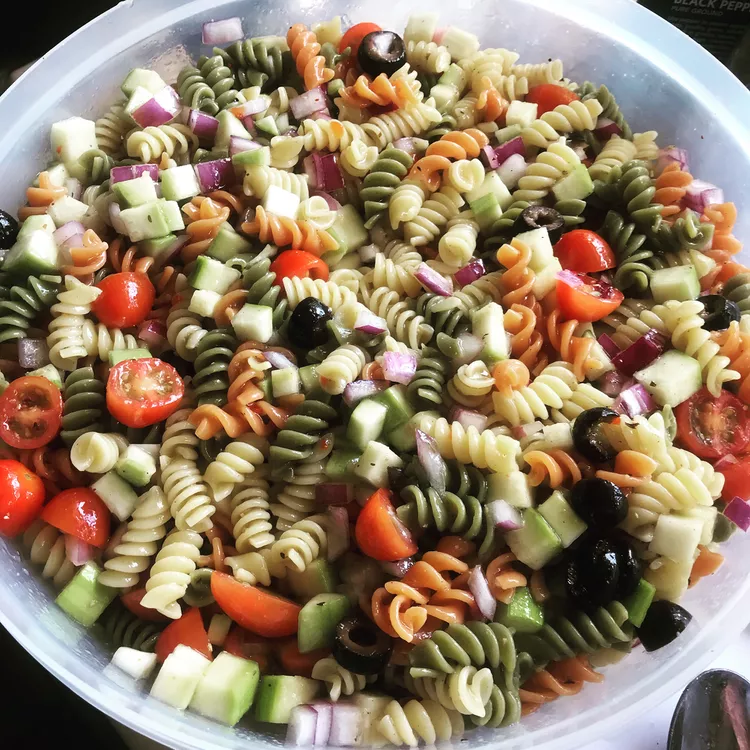

Rainbow Pasta Salad

Pasta salad is a staple for any picnic or outdoor gathering.
This is an easy salad to prepare and share with friends and family,
going with just about anything on your menu.
Keep it cool with fresh cold cucumbers.
I usually add olives to my pasta salad for a salty, briny bite.
Ingredients
- 1 (16 ounce) package tri-colored pasta assortment
- 2 large tomatoes, diced
- 1 large cucumber, peeled and diced
- 1 red onion, finely chopped
- 1 (16 ounce) bottle Italian-style salad dressing
Steps
- Step 1
Bring a large pot of lightly salted water to a boil.
Add pasta and cook for 8 to 10 minutes or until al dente; drain and rinse in cold water.
- Step 2
In a large bowl combine tomatoes, cucumbers, onion, cooled pasta and Italian dressing.
Refrigerate overnight, or for at least 1 hour.